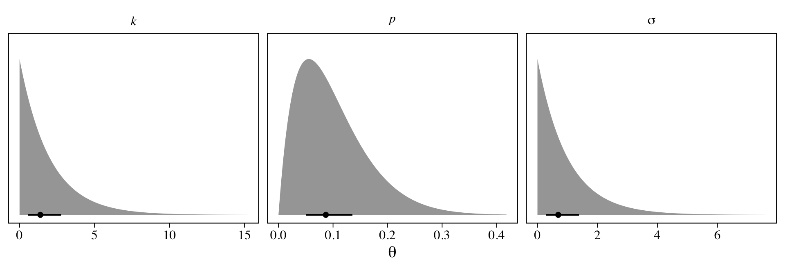
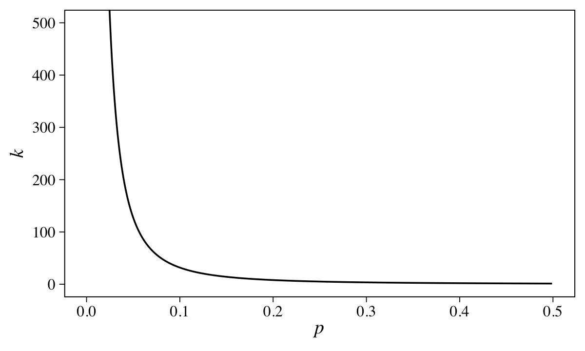
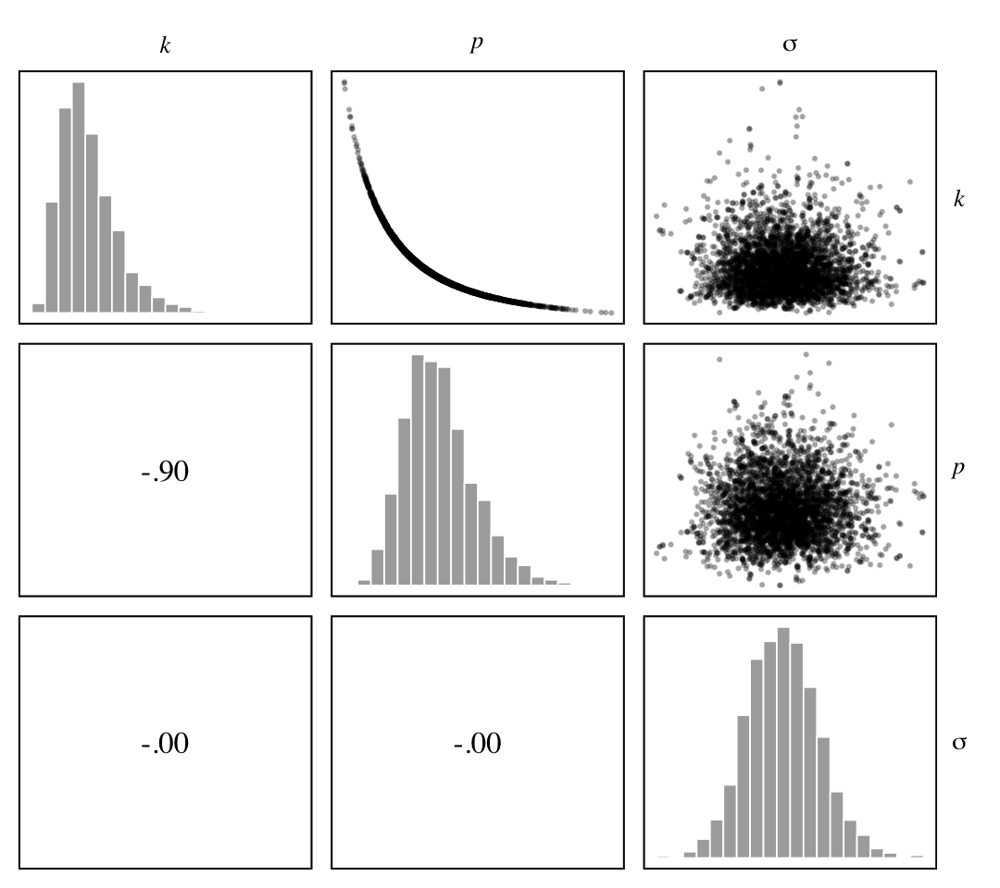
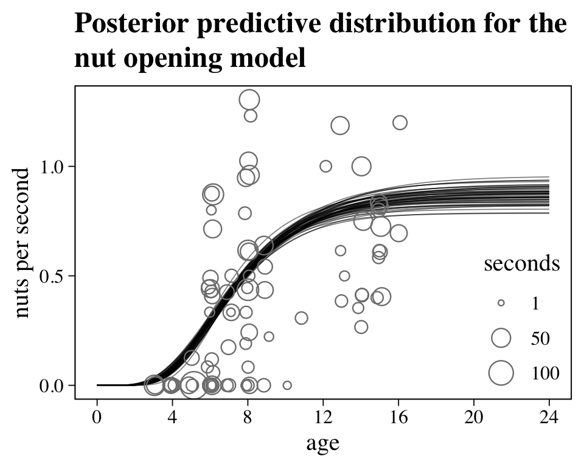
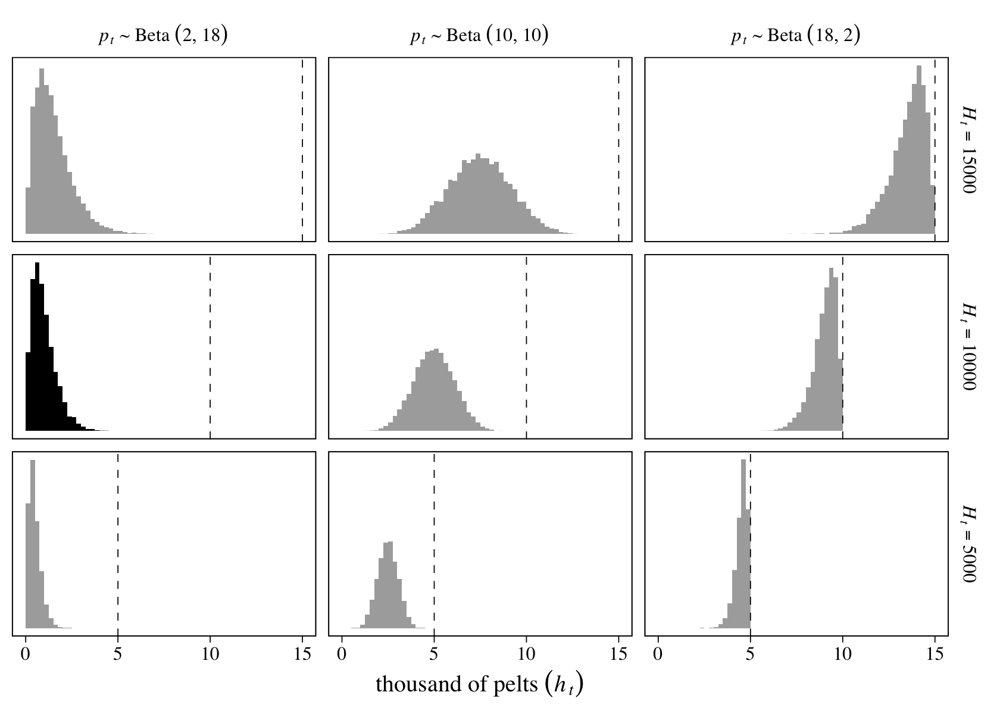
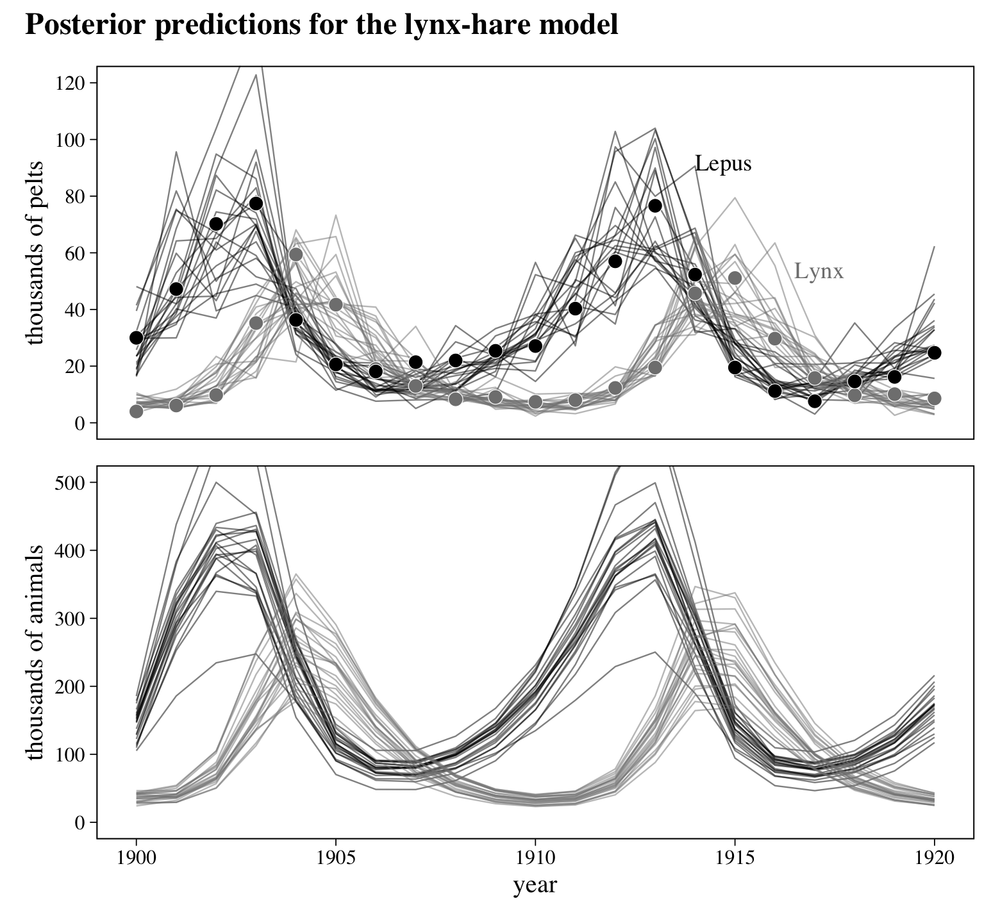
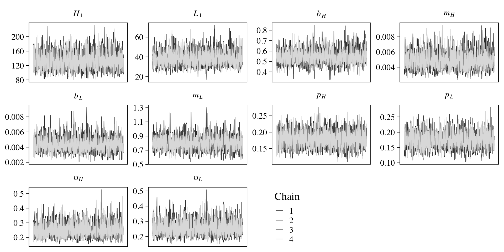
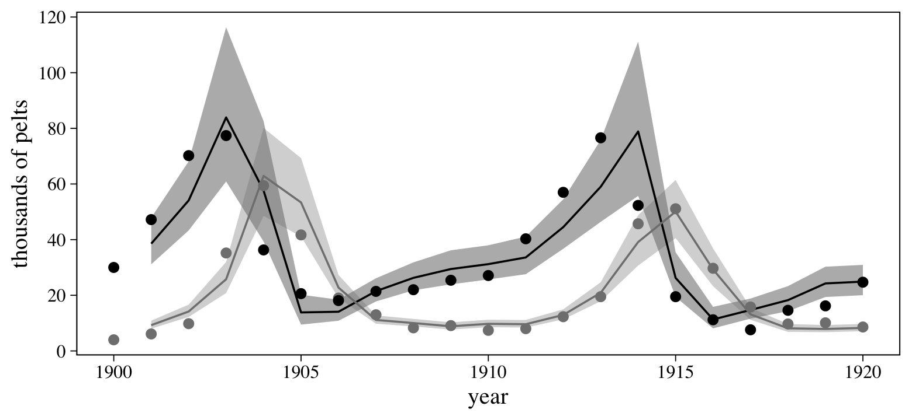

16 Generalized Linear Madness
Applied statistics has to apply to all the sciences, and so it is often much vaguer about models. Instead it focuses on average performance, regardless of the model. The generalized linear models in the preceding chapters are not credible scientific models of most natural processes. They are powerful, geocentric (Chapter 4) descriptions of associations. In combination with a logic of causal inference, for example DAGs and do-calculus, generalized linear models can nevertheless be unreasonably powerful.
But there are problems with this GLMs-plus-DAGs approach. Not everything can be modeled as a GLM—a linear combination of variables mapped onto a non-linear outcome. But if it is the only approach you know, then you have to use it….
In this chapter, I will go beyond generalized linear madness. I’ll work through examples in which the scientific context provides a causal model that will breathe life into the statistical model. I’ve chosen examples which are individually distinct and highlight different challenges in developing and translating causal models into bespoke (see the Rethinking
box[section] below) statistical models. You won’t require any specialized scientific expertise to grasp these examples. And the basic strategy is the same as it has been from the start: Define a generative model of a phenomenon and then use that model to design strategies for causal inference and statistical estimation. (McElreath, 2020b, p. 525, emphasis in the original)
McElreath then reported he was going to work with Stan code, via rstan::stan(), in this chapter because of the unique demands of some of the models. Our approach will be mixed. We can fit at least a few of the models with brms, particularly with help from the non-linear syntax. However, some of the models to ome are either beyond the current scope of brms or are at least beyond my current skill set. In those cases, we’ll follow McElreath’s approach and fit the models with stan().
16.0.0.1 Rethinking: Bespoken for.
Mass production has some advantages, but it also makes our clothes fit badly. Garments bought off-the-shelf are not manufactured with you in mind. They are not bespoke products, designed for any particular person with a particular body. Unless you are lucky to have a perfectly average body shape, you will need a tailor to get better.
Statistical analyses are similar. Generalized linear models are off-the-shelf products, mass produced for a consumer market of impatient researchers with diverse goals. Science asked statisticians for tools that could be used anywhere. And so they delivered. But the clothes don’t always fit. (p. 526, emphasis in the original)
16.1 Geometric people
Back in Chapter 4, you met linear regression in the context of building a predictive model of height using weight. You even saw how to measure non-linear associations between the two variables. But nothing in that example was scientifically satisfying. The height-weight model was just a statistical device. It contains no biological information and tells us nothing about how the association between height and weight arises. Consider for example that weight obviously does not cause height, at least not in humans. If anything, the causal relationship is the reverse.
So now let’s try to do better. Why? Because when the model is scientifically inspired, rather than just statistically required, disagreements between model and data are informative of real causal relationships.
Suppose for example that a person is shaped like a cylinder. Of course a person isn’t exactly shaped like a cylinder. There are arms and a head. But let’s see how far this cylinder model gets us. The weight of the cylinder is a consequence of the volume of the cylinder. And the volume of the cylinder is a consequence of growth in the height and width of the cylinder. So if we can relate the height to the volume, then we’d have a model to predict weight from height. (p. 526, emphasis in the original)
16.1.1 The scientific model.
If we let \(V\) stand for volume, \(r\) stand for a radius, and \(h\) stand for height, we can solve for volume by
\[V = \pi r^2 h.\] If we further presume a person’s radius is unknown, but some proportion (\(p\)) of height (\(ph\)), we can rewrite the formula as
\[ \begin{align*} V & = \pi (ph)^2 h \\ & = \pi p^2 h^3. \end{align*} \]
Though we’re not interested in volume per se, we might presume weight is some proportion of volume. Thus we could include a final parameter \(k\) to stand for the conversion form weight to volume, leaving us with the formula
\[W = kV = k \pi p^2 h^3,\]
where \(W\) denotes weight.
16.1.2 The statistical model.
For one last time, together, let’s load the Howell1 data.
library(tidyverse)
data(Howell1, package = "rethinking")
d <- Howell1
rm(Howell1)
# scale observed variables
d <-
d %>%
mutate(w = weight / mean(weight),
h = height / mean(height))McElreath’s proposed statistical model follows the form
\[ \begin{align*} \text{w}_i & \sim \operatorname{Log-Normal}(\mu_i, \sigma) \\ \exp(\mu_i) & = k \pi p^2 \text{h}_i^3 \\ k & \sim \operatorname{Exponential}(0.5) \\ p & \sim \operatorname{Beta}(2, 18) \\ \sigma & \sim \operatorname{Exponential}(1), && \text{where} \\ \text w_i & = \text{weight}_i \big / \overline{\text{weight}}, && \text{and} \\ \text h_i & = \text{height}_i \big / \overline{\text{height}}. \end{align*} \]
The Log-Normal likelihood ensures the predictions for \(\text{weight}_i\) will always be non-negative. Because our parameter \(p\) is the ratio of radius to height, \(p = r / h\), it must be positive. Since people are typically taller than their width, it should also be less than one, and probably substantially less than that. Our next step will be taking a look at our priors.
For the plots in this chapter, we’ll give a nod the minimalistic plots in the authoritative text by Gelman, Carlin, et al. (2013), Bayesian data analysis: Third edition. Just to be a little kick, we’ll set the font to family = "Times". Most of the adjustments will come from ggthemes::theme_base().
library(ggthemes)
theme_set(
theme_base(base_size = 12) +
theme(text = element_text(family = "Times"),
axis.text = element_text(family = "Times"),
axis.ticks = element_line(size = 0.25),
axis.ticks.length = unit(0.1, "cm"),
panel.background = element_rect(size = 0.1),
plot.background = element_blank(),
)
)Now we have our theme, let’s get a sense of our priors.
library(tidybayes)
library(brms)
c(prior(beta(2, 18), nlpar = p, coef = italic(p)),
prior(exponential(0.5), nlpar = p, coef = italic(k)),
prior(exponential(1), class = sigma, coef = sigma)) %>%
parse_dist(prior) %>%
ggplot(aes(y = 0, dist = .dist, args = .args)) +
stat_dist_halfeye(.width = .5, size = 1, p_limits = c(0, 0.9995),
n = 2e3, normalize = "xy") +
scale_y_continuous(NULL, breaks = NULL) +
xlab(expression(theta)) +
facet_wrap(~coef, scales = "free_x", labeller = label_parsed)
Here the points are the posterior medians and the horizontal lines the quantile-based 50% intervals. Turns out that \(\operatorname{Beta}(2, 18)\) prior for \(p\) pushes the bulk of the prior mass down near zero. The beta distribution also forces the parameter space for \(p\) to range between 0 and 1. If we denote the two parameters of the beta distribution as \(\alpha\) and \(\beta\), we can compute the mean for any beta distribution as \(\alpha / (\alpha + \beta)\). Thus the mean for our \(\operatorname{Beta}(2, 18)\) prior is \(2 / (2 + 18) = 2 / 20 = 0.1\).
Because we computed our weight and height variables, w and h, by dividing the original variables by their respective means, each now has a mean of 1.
## # A tibble: 2 x 2
## name mean
## <chr> <dbl>
## 1 h 1
## 2 w 1Here’s their bivariate distribution in a scatter plot.
d %>%
ggplot(aes(x = h, y = w)) +
geom_vline(xintercept = 1, linetype = 2, size = 1/4, color = "grey50") +
geom_hline(yintercept = 1, linetype = 2, size = 1/4, color = "grey50") +
geom_point(size = 1/4)
With this scaling, here is the formula for an individual with average weight and height:
\[ \begin{align*} 1 & = k \pi p^2 1^3 \\ & = k \pi p^2. \end{align*} \]
If you assume \(p < .5\), \(k\) must be greater than 1. \(k\) also has to be positive. To get a sense of this, we can further work the algebra:
\[ \begin{align*} 1 & = k \pi p^2 \\ 1/k & = \pi p^2 \\ k & = 1 / \pi p^2. \end{align*} \]
To get a better sense of that relation, we might plot.
tibble(p = seq(from = 0.001, to = 0.499, by = 0.001)) %>%
mutate(k = 1 / (pi * p^2)) %>%
ggplot(aes(x = p, y = k)) +
geom_line() +
labs(x = expression(italic(p)),
y = expression(italic(k))) +
coord_cartesian(ylim = c(0, 500))
McElreath’s quick and dirty solution was to set \(k \sim \operatorname{Exponential}(0.5)\), which has a prior predictive mean of 2.
By setting up his model formula as exp(mu) = ..., McElreath effectively used the log link. It turns out that brms only supports the identity and inverse links for family = lognormal. However, we can sneak in the log link by nesting the right-hand side of the formula within log().
b16.1 <-
brm(data = d,
family = lognormal,
bf(w ~ log(3.141593 * k * p^2 * h^3),
k + p ~ 1,
nl = TRUE),
prior = c(prior(beta(2, 18), nlpar = p, lb = 0, ub = 1),
prior(exponential(0.5), nlpar = k, lb = 0),
prior(exponential(1), class = sigma)),
iter = 2000, warmup = 1000, chains = 4, cores = 4,
seed = 16,
file = "fits/b16.01")Check the parameter summary.
## Family: lognormal
## Links: mu = identity; sigma = identity
## Formula: w ~ log(3.141593 * k * p^2 * h^3)
## k ~ 1
## p ~ 1
## Data: d (Number of observations: 544)
## Samples: 4 chains, each with iter = 2000; warmup = 1000; thin = 1;
## total post-warmup samples = 4000
##
## Population-Level Effects:
## Estimate Est.Error l-95% CI u-95% CI Rhat Bulk_ESS Tail_ESS
## k_Intercept 5.79 2.72 2.16 12.49 1.00 1177 1488
## p_Intercept 0.25 0.06 0.16 0.37 1.00 1178 1459
##
## Family Specific Parameters:
## Estimate Est.Error l-95% CI u-95% CI Rhat Bulk_ESS Tail_ESS
## sigma 0.21 0.01 0.19 0.22 1.00 1345 1133
##
## Samples were drawn using sampling(NUTS). For each parameter, Bulk_ESS
## and Tail_ESS are effective sample size measures, and Rhat is the potential
## scale reduction factor on split chains (at convergence, Rhat = 1).McElreath didn’t show the parameter summary for his m16.1 in the text. If you fit the model with both rethinking and brms, you’ll see our b16.1 matches up quite well. To make our version of Figure 16.2, we’ll use a GGally::ggpairs() workflow. First we’ll save our customizes settings for the three subplot types.
my_lower <- function(data, mapping, ...) {
# get the x and y data to use the other code
x <- eval_data_col(data, mapping$x)
y <- eval_data_col(data, mapping$y)
# compute the correlations
corr <- cor(x, y, method = "p", use = "pairwise")
abs_corr <- abs(corr)
# plot the cor value
ggally_text(
label = formatC(corr, digits = 2, format = "f") %>% str_replace(., "0.", "."),
mapping = aes(),
size = 3.5,
color = "black",
family = "Times") +
scale_x_continuous(NULL, breaks = NULL) +
scale_y_continuous(NULL, breaks = NULL)
}
my_diag <- function(data, mapping, ...) {
ggplot(data = data, mapping = mapping) +
geom_histogram(size = 1/4, color = "white", fill = "grey67", bins = 20) +
scale_x_continuous(NULL, breaks = NULL) +
scale_y_continuous(NULL, breaks = NULL)
}
my_upper <- function(data, mapping, ...) {
ggplot(data = data, mapping = mapping) +
geom_point(size = 1/4, alpha = 1/4) +
scale_x_continuous(NULL, breaks = NULL) +
scale_y_continuous(NULL, breaks = NULL)
}Now we make our version of Figure 16.2.a.
library(GGally)
posterior_samples(b16.1) %>%
select(-lp__) %>%
set_names(c("italic(k)", "italic(p)", "sigma")) %>%
ggpairs(upper = list(continuous = my_upper),
diag = list(continuous = my_diag),
lower = list(continuous = my_lower),
labeller = label_parsed) +
theme(strip.text = element_text(size = 8),
strip.text.y = element_text(angle = 0))
We see the lack of identifiability of \(k\) and \(p\) resulted in a strong inverse relation between them. Now here’s how we might make Figure 16.2.b.
nd <-
tibble(h = seq(from = 0, to = 1.5, length.out = 50))
p <-
predict(b16.1,
newdata = nd) %>%
data.frame() %>%
bind_cols(nd)
d %>%
ggplot(aes(x = h)) +
geom_smooth(data = p,
aes(y = Estimate, ymin = Q2.5, ymax = Q97.5),
stat = "identity",
fill = "grey67", color = "black", size = 1/4) +
geom_point(aes(y = w),
size = 1/3) +
coord_cartesian(xlim = c(0, max(d$h)),
ylim = c(0, max(d$w))) +
labs(x = "height (scaled)",
y = "weight (scaled)")
Overall the model did okay, but the poor fit for the cases with lower values of height and weight suggests we might be missing important differences between children and adults.
16.1.3 GLM in disguise.
Recall that because brms does not support the log link for the Log-Normal likelihood, we recast our b16.1 likelihood as
\[ \begin{align*} \text{w}_i & \sim \operatorname{Log-Normal}(\mu_i, \sigma) \\ \mu_i & = \log(k \pi p^2 \text{h}_i^3). \end{align*} \]
Because multiplication becomes addition on the log scale, we can also express this as
\[ \begin{align*} \text{w}_i & \sim \operatorname{Log-Normal}(\mu_i, \sigma) \\ \mu_i & = \log(k) + \log(\pi) + 2 \log(p) + 3 \log(\text{h}_i), \end{align*} \]
which means our fancy non-linear model is just linear regression on the log scale. McElreath pointed this out
to highlight one of the reasons that generalized linear models are so powerful. Lots of natural relationships are GLM relationships, on a specific scale of measurement. At the same time, the GLM approach wants to simply estimate parameters which may be informed by a proper theory, as in this case. (p. 531)


16.3 Ordinary differential nut cracking
Load the Panda_nuts data (Boesch et al., 2019).
Anticipating McElreath’s R code 16.11, we’ll wrangle a little.
## Rows: 84
## Columns: 9
## $ chimpanzee <int> 11, 11, 18, 18, 18, 11, 11, 17, 7, 1, 22, 9, 9, 9, 9, 9, 9, 9, 9, 9, 15, 7, 9, 1, 7, 13…
## $ age <int> 3, 3, 4, 4, 4, 4, 4, 5, 5, 5, 5, 6, 6, 6, 6, 6, 6, 6, 6, 6, 6, 6, 6, 6, 6, 6, 6, 6, 6, …
## $ sex <fct> m, m, f, f, f, m, m, f, m, m, m, m, m, m, m, m, m, m, m, m, m, m, m, m, m, m, m, m, m, …
## $ hammer <fct> G, G, wood, G, L, Q, Q, wood, G, L, wood, G, G, G, G, G, G, G, G, G, G, G, G, L, G, woo…
## $ nuts_opened <int> 0, 0, 0, 0, 0, 0, 0, 0, 3, 0, 0, 58, 4, 21, 9, 2, 30, 19, 13, 6, 11, 1, 2, 0, 1, 0, 0, …
## $ seconds <dbl> 61.0, 37.0, 20.0, 14.0, 13.0, 24.0, 30.5, 135.0, 24.0, 13.0, 34.0, 66.5, 5.0, 24.0, 20.…
## $ help <fct> N, N, N, y, N, N, N, N, N, N, N, N, N, N, N, N, N, N, N, N, N, y, N, N, N, N, N, y, y, …
## $ n <int> 0, 0, 0, 0, 0, 0, 0, 0, 3, 0, 0, 58, 4, 21, 9, 2, 30, 19, 13, 6, 11, 1, 2, 0, 1, 0, 0, …
## $ age_s <dbl> 0.1875, 0.1875, 0.2500, 0.2500, 0.2500, 0.2500, 0.2500, 0.3125, 0.3125, 0.3125, 0.3125,…Our criterion is n, the number of Panda nuts opened by a chimpanzee on a given occasion. The two focal predictor variables are age and seconds. Here they are depicted in a pairs plot.
d %>%
select(n, age, seconds) %>%
ggpairs(upper = list(continuous = my_upper),
diag = list(continuous = my_diag),
lower = list(continuous = my_lower)) +
theme(strip.text.y = element_text(hjust = 0, angle = 0))
16.3.1 Scientific model.
As a starting point, McElreath proposed we the strength of a chimpanzee would relate to the number of nuts they might open. We don’t have a measure of strength, but we do have age, which is a proxy for how close a chimp might be to their maximum body size, and we presume body size would be proportional to strength. If we let \(t\) index time, \(M_\text{max}\) be the maximum body size (mass), \(M_t\) be the current body size, and \(k\) stand for the rate of skill gain the comes with age, we can write
\[M_t = M_\text{max} [1 - \exp(-kt) ]\]
to solve for mass at a given age (von Bertalanffy, 1934). But again, we actually care about strength, not mass. Letting \(S_t\) be strength at time \(t\), we can express a proportional relation between the two as \(S_t = \beta M_t\). Now if we let \(\lambda\) stand in for the number of nuts opening, \(\alpha\) express the relation of strength to nut opening, we can write
\[\lambda = \alpha S_t^\theta = \alpha \big ( \beta M_\text{max} [1 - \exp(-kt) ] \big ) ^\theta,\]
“where \(\theta\) is some exponent greater than 1” (p. 538). If we rescale \(M_\text{max} = 1\), we can simplify the equation to
\[\lambda = \alpha \beta^\theta [1 - \exp(-kt) ]^\theta.\]
As “the product \(\alpha \beta^\theta\) in the front just rescales strength to nuts-opened-per-second” (p. 538), we can colapse it to a single parameter, \(\phi\), which leaves us with
\[\lambda = \phi [1 - \exp(-kt) ]^\theta.\]
This is our scientific model.
16.3.2 Statistical model.
Now if we let \(n_i\) be the number of nuts opened, we can write our statistical model as
\[ \begin{align*} n_i & \sim \operatorname{Poisson}(\lambda_i) \\ \lambda_i & = \text{seconds}_i \, \phi [1 - \exp(-k \,\text{age}_i) ]^\theta, \end{align*} \]
where we have replaced our time index, \(t\), with the variable age. By including the variable seconds in the equation, we have scaled the results to be nuts per second. McElreath proposed the priors:
\[ \begin{align*} \phi & \sim \operatorname{Log-Normal}(\log 1, 0.10) \\ k & \sim \operatorname{Log-Normal}(\log 2, 0.25) \\ \theta & \sim \operatorname{Log-Normal}(\log 5, 0.25), \end{align*} \]
all of which were Log-Normal to ensure the parameters were positive and continuous. To get a sense of what these priors implied, he simulated. Here’s our version of his simulations, which make up Figure 16.4.
n <- 1e4
# define the x-axis breaks
at <- 0:6 / 4
# how many prior draws would you like?
sample_n <- 50
# simulate
set.seed(16)
prior <-
tibble(index = 1:n,
phi = rlnorm(n, meanlog = log(1), sdlog = 0.1),
k = rlnorm(n, meanlog = log(2), sdlog = 0.25),
theta = rlnorm(n, meanlog = log(5), sdlog = 0.25)) %>%
sample_n(size = sample_n) %>%
expand(nesting(index, phi, k, theta),
age = seq(from = 0, to = 1.5, length.out = 1e2)) %>%
mutate(bm = 1 - exp(-k * age),
ns = phi * (1 - exp(-k * age))^theta)
# left panel
p1 <-
prior %>%
ggplot(aes(x = age, y = bm, group = index)) +
geom_line(size = 1/4, alpha = 1/2) +
scale_x_continuous(breaks = at, labels = round(at * max(d$age))) +
ylab("body mass")
# right panel
p2 <-
prior %>%
ggplot(aes(x = age, y = ns, group = index)) +
geom_line(size = 1/4, alpha = 1/2) +
scale_x_continuous(breaks = at, labels = round(at * max(d$age))) +
ylab("nuts per second")
# combine and plot
library(patchwork)
p1 + p2 +
plot_annotation(title = "Prior predictive simulation for the nut opening model",
subtitle = "Each panel shows the results from 50 prior draws.")
McElreath suggested we inspect the distributions of these priors. Here they are in a series of histograms.
set.seed(16)
tibble(phi = rlnorm(n, meanlog = log(1), sdlog = 0.1),
`italic(k)` = rlnorm(n, meanlog = log(2), sdlog = 0.25),
theta = rlnorm(n, meanlog = log(5), sdlog = 0.25)) %>%
pivot_longer(everything()) %>%
ggplot(aes(x = value)) +
geom_histogram(fill = "grey67", bins = 40, boundary = 0) +
scale_y_continuous(NULL, breaks = NULL) +
scale_x_continuous("marginal prior", limits = c(0, NA)) +
facet_wrap(~name, scales = "free", labeller = label_parsed)
Happily, we can fit this model using the non-linear brms syntax.
b16.4 <-
brm(data = d,
family = poisson(link = identity),
bf(n ~ seconds * phi * (1 - exp(-k * age_s))^theta,
phi + k + theta ~ 1,
nl = TRUE),
prior = c(prior(lognormal(log(1), 0.1), nlpar = phi, lb = 0),
prior(lognormal(log(2), 0.25), nlpar = k, lb = 0),
prior(lognormal(log(5), 0.25), nlpar = theta, lb = 0)),
iter = 2000, warmup = 1000, chains = 4, cores = 4,
seed = 16,
file = "fits/b16.04")Check the parameter summary.
## Family: poisson
## Links: mu = identity
## Formula: n ~ seconds * phi * (1 - exp(-k * age_s))^theta
## phi ~ 1
## k ~ 1
## theta ~ 1
## Data: d (Number of observations: 84)
## Samples: 4 chains, each with iter = 2000; warmup = 1000; thin = 1;
## total post-warmup samples = 4000
##
## Population-Level Effects:
## Estimate Est.Error l-95% CI u-95% CI Rhat Bulk_ESS Tail_ESS
## phi_Intercept 0.86 0.04 0.79 0.95 1.00 1045 1589
## k_Intercept 5.97 0.56 4.88 7.09 1.00 787 1151
## theta_Intercept 9.81 2.00 6.50 14.31 1.00 858 1276
##
## Samples were drawn using sampling(NUTS). For each parameter, Bulk_ESS
## and Tail_ESS are effective sample size measures, and Rhat is the potential
## scale reduction factor on split chains (at convergence, Rhat = 1).No we might get a sense of what this posterior means by plotting nuts per second as a function of age in our version of Figure 16.5.
posterior_samples(b16.4) %>%
mutate(iter = 1:n()) %>%
sample_n(sample_n) %>%
expand(nesting(iter, b_phi_Intercept, b_k_Intercept, b_theta_Intercept),
age = seq(from = 0, to = 1.5, length.out = 1e2)) %>%
mutate(ns = b_phi_Intercept * (1 - exp(-b_k_Intercept * age))^b_theta_Intercept) %>%
ggplot() +
geom_line(aes(x = age, y = ns, group = iter),
size = 1/4, alpha = 1/2) +
geom_jitter(data = d,
aes(x = age_s, y = n / seconds, size = seconds),
shape = 1, width = 0.01, color = "grey50") +
scale_size_continuous(breaks = c(1, 50, 100), limits = c(1, NA)) +
scale_x_continuous(breaks = at, labels = round(at * max(d$age))) +
labs(title = "Posterior predictive distribution for the\nnut opening model",
y = "nuts per second") +
theme(legend.background = element_blank(),
legend.position = c(.9, .25))
Looks like things flatten out around age == 16. Yet since the data drop off at that age, we probably shouldn’t get overconfident.
16.4 Population dynamics
Load the Lynx_Hare population dynamics data (Hewitt, 1921).
## Rows: 21
## Columns: 3
## $ Year <int> 1900, 1901, 1902, 1903, 1904, 1905, 1906, 1907, 1908, 1909, 1910, 1911, 1912, 1913, 1914, 1915…
## $ Lynx <dbl> 4.0, 6.1, 9.8, 35.2, 59.4, 41.7, 19.0, 13.0, 8.3, 9.1, 7.4, 8.0, 12.3, 19.5, 45.7, 51.1, 29.7,…
## $ Hare <dbl> 30.0, 47.2, 70.2, 77.4, 36.3, 20.6, 18.1, 21.4, 22.0, 25.4, 27.1, 40.3, 57.0, 76.6, 52.3, 19.5…Figure 6.6 will give us a sense of how the lynx and hare populations ebbed and flowed.
# for annotation
text <-
tibble(name = c("Hare", "Lynx"),
label = c("Lepus", "Lynx"),
Year = c(1913.5, 1915.5),
value = c(78, 52))
# wrangle
Lynx_Hare %>%
pivot_longer(-Year) %>%
# plot!
ggplot(aes(x = Year, y = value)) +
geom_line(aes(color = name),
size = 1/4) +
geom_point(aes(fill = name),
size = 3, shape = 21, color = "white") +
geom_text(data = text,
aes(label = label, color = name),
hjust = 0, family = "Times") +
scale_fill_grey(start = 0, end = .5) +
scale_color_grey(start = 0, end = .5) +
scale_y_continuous("thousands of pelts", breaks = 0:4 * 20, limits = c(0, 90)) +
theme(legend.position = "none")
Note, however, that these are numbers of pelts, not of actual animals.
A typical way to model evenly-spaced time series data like this would be with an autoregressive model with the basic structure
\[\operatorname{E}(y_t) = \alpha + \beta_1 y_{t-1},\]
where \(t\) indexes time and \(t - 1\) is the time point immediately before \(t\). Models following this form are called first-order autoregressive models, AR(1), meaning that the current time point is only influenced by the previous time point, but none of the earlier ones. You can build on this format by adding other predictors. A natural way would be to use a predictor from \(t - 1\) to predict \(y_t\), following the form
\[\operatorname{E}(y_t) = \alpha + \beta_1 y_{t-1} + \beta_2 x_{t-1}.\]
But that’s still a first-order model. A second-order model, AR(2), would include a term for \(y_{t - 2}\), such as
\[\operatorname{E}(y_t) = \alpha + \beta_1 y_{t-1} + \beta_2 x_{t-1} + \beta_3 y_{t-2}.\]
McElreath isn’t a huge fan of these models, particularly from the scientific modeling perspective he developed in this chapter. But brms can fit them and we’ll practice a little in a bonus section, later on. In the mean time, we’ll follow along and learn about ordinary differential equations (ODEs).
16.4.1 The scientific model.
If we let \(H_t\) be the number of hares at time \(t\), we can express the rate of change in the hare population as
\[\frac{\mathrm{d} H}{\mathrm{d} t} = H_t \times (\text{birth rate}) - H_t \times (\text{death rate}).\]
If we presume both birth rates and death rates (mortality rates) are constants, we might denote them \(b_H\) and \(m_H\), respectively, and re-express the formula as
\[\frac{\mathrm{d} H}{\mathrm{d} t} = H_t b_H - H_t m_H = H_t (b_H - m_H).\]
If we let \(L_t\) stand for the number of lynx present at time \(t\), we can allow the mortality rate depend on that variable with the expanded formula
\[\frac{\mathrm{d} H}{\mathrm{d} t} = H_t (b_H - L_t m_H).\]
We can expand this even further to model how the number of hares at a given time influence the birth rate for lynx (\(b_L\)) to help us model the rate of change in the lynx population as
\[\frac{\mathrm{d} L}{\mathrm{d} t} = L_t (H_t b_L - m_L),\]
where the lynx mortality rate (\(m_l\)) is now constant. This is called the Lotka-Volterra model (Lotka, 1925; Volterra, 1926). You may have noticed how the above equations shifted our focus from what were were originally interested in, \(\operatorname{E}(H_t)\), to a rate of change, \(\mathrm{d} H / \mathrm{d} t\). Happily, our equation for \(\mathrm{d} H / \mathrm{d} t\), “tells us how to update \(H\) after each tiny unit of passing time \(\mathrm d t\)” (p. 544). You update by
\[H_{t +\mathrm d t} = H_t + \mathrm d t \frac{\mathrm d H}{\mathrm d t} = H_t + \mathrm d t H_t (b_H - L_t m_H).\]
Here we’ll use the custom sim_lynx_hare() function to simulate how this can work. Our version of the function is very similar to the one McElreath displayed in his R code 16.14, but we changed it so it returns a tibble.
sim_lynx_hare <- function(n_steps, init, theta, dt = 0.002) {
L <- rep(NA, n_steps)
H <- rep(NA, n_steps)
L[1] <- init[1]
H[1] <- init[2]
for (i in 2:n_steps) {
H[i] <- H[i - 1] + dt * H[i - 1] * (theta[1] - theta[2] * L[i - 1])
L[i] <- L[i - 1] + dt * L[i - 1] * (theta[3] * H[i - 1] - theta[4])
}
# return a tibble
tibble(H = H,
L = L)
}Now we simulate.
theta <- c(0.5, 0.05, 0.025, 0.5)
# simulate
z <- sim_lynx_hare(n_steps = 1e4,
init = as.numeric(Lynx_Hare[1, 2:3]),
theta)
# what did we do?
glimpse(z)## Rows: 10,000
## Columns: 2
## $ H <dbl> 30.00000, 30.01800, 30.03600, 30.05401, 30.07203, 30.09005, 30.10807, 30.12610, 30.14413, 30.1621…
## $ L <dbl> 4.000000, 4.002000, 4.004005, 4.006014, 4.008028, 4.010046, 4.012069, 4.014097, 4.016129, 4.01816…Each row is a stand-in index for time. Here we’ll explicitly add a time column and them plot the results in our version of Figure 16.7.
z %>%
mutate(time = 1:n()) %>%
pivot_longer(-time) %>%
ggplot(aes(x = time, y = value)) +
geom_line(aes(color = name),
size = 1/4) +
scale_color_grey(start = 0, end = .5) +
scale_x_continuous(breaks = NULL) +
scale_y_continuous("number (thousands)", breaks = 0:4 * 10, limits = c(0, 45)) +
theme(legend.position = "none")
“This model produces cycles, similar to what we see in the data. The model behaves this way, because lynx eat hares. Once the hares are eaten, the lynx begin to die off. Then the cycle repeats (p. 545).”
16.4.2 The statistical model.
If we continue to let \(H_t\) and \(L_t\) be the number of hares and lynx at time \(t\), we might also want to acknowledge the distinction between those numbers and our observations by letting \(h_t\) and \(l_t\) stand for the observed numbers of hares and lynx. These observed numbers, recall, are from counts of pelts. We want a statistical model that can connect \(h_t\) to \(H_t\) and connect \(l_t\) to \(L_t\). Part of that model would include the probability a hare was trapped on a given year, \(p_h\), and a similar probability for a lynx getting trapped, \(p_l\). To make things worse, further imagine the number of pelts for each, in a given year, was rounded to the nearest \(100\) and divided by \(1{,}000\). Those are our values.
We practice simulating all this in Figure 16.8. Here we propose a population of \(H_t = 10^4\) hares and an average trapping rate of about \(10\%\), as expressed by \(p_t \sim \operatorname{Beta}(2, 18)\). As described above, we then divide the number of observed pelts by \(1{,}000\) and round the results, yielding \(h_t\).
n <- 1e4
Ht <- 1e4
set.seed(16)
# simulate
tibble(pt = rbeta(n, shape1 = 2, shape2 = 18)) %>%
mutate(ht = rbinom(n, size = Ht, prob = pt)) %>%
mutate(ht = round(ht / 1000, digits = 2)) %>%
# plot
ggplot(aes(x = ht)) +
geom_histogram(size = 1/4, binwidth = 0.1,
color = "white", fill = "grey67") +
scale_y_continuous(NULL, breaks = NULL) +
xlab(expression(thousand~of~pelts~(italic(h[t]))))
On page 546, McElreath encouraged us to try the simulation with different values of \(H_t\) and \(p_t\). Here we’ll do so with a \(3 \times 3\) grid of \(H_t = \{5{,}000, 10{,}000, 15{,}000\}\) and \(p_t \sim \{ \operatorname{Beta}(2, 18), \operatorname{Beta}(10, 10), \operatorname{Beta}(18, 2) \}\).
set.seed(16)
# define the 3X3 grid
tibble(shape1 = c(2, 10, 18),
shape2 = c(18, 10, 2)) %>%
expand(nesting(shape1, shape2),
Ht = c(5e3, 1e4, 15e3)) %>%
# simulate
mutate(pt = purrr::map2(shape1, shape2, ~rbeta(n, shape1 = .x, shape2 = .y))) %>%
mutate(ht = purrr::map2(Ht, pt, ~rbinom(n, size = .x, prob = .y))) %>%
unnest(c(pt, ht)) %>%
# wrangle
mutate(ht = round(ht / 1000, digits = 2),
beta = str_c("italic(p[t])%~%'Beta '(", shape1, ", ", shape2, ")"),
Htlab = str_c("italic(H[t])==", Ht)) %>%
mutate(beta = factor(beta,
levels = c("italic(p[t])%~%'Beta '(2, 18)", "italic(p[t])%~%'Beta '(10, 10)", "italic(p[t])%~%'Beta '(18, 2)")),
Htlab = factor(Htlab,
levels = c("italic(H[t])==15000", "italic(H[t])==10000", "italic(H[t])==5000"))) %>%
# plot!
ggplot(aes(x = ht)) +
geom_histogram(aes(fill = beta == "italic(p[t])%~%'Beta '(2, 18)" & Htlab == "italic(H[t])==10000"),
size = 1/10, binwidth = 0.25) +
geom_vline(aes(xintercept = Ht / 1000),
size = 1/4, linetype = 2) +
scale_fill_grey(start = .67, end = 0, breaks = NULL) +
scale_y_continuous(NULL, breaks = NULL) +
xlab(expression(thousand~of~pelts~(italic(h[t])))) +
facet_grid(Htlab~beta, labeller = label_parsed, scales = "free_y")
The vertical dashed lines mark off the maximum values in each panel. The histogram in black is of the simulation parameters based on our version of Figure 16.8, above.
McElreath’s proposed model is
\[ \begin{align*} h_t & \sim \operatorname{Log-Normal} \big (\log(p_H H_t), \sigma_H \big) \\ l_t & \sim \operatorname{Log-Normal} \big (\log(p_L L_t), \sigma_L \big) \\ H_1 & \sim \operatorname{Log-Normal}(\log 10, 1) \\ L_1 & \sim \operatorname{Log-Normal}(\log 10, 1) \\ H_{T >1} & = H_1 + \int_1^T H_t (b_H - m_H L_t) \mathrm{d} t \\ L_{T >1} & = L_1 + \int_1^T L_t (b_L H_T - m_L) \mathrm{d} t \\ \sigma_H & \sim \operatorname{Exponential}(1) \\ \sigma_L & \sim \operatorname{Exponential}(1) \\ p_H & \sim \operatorname{Beta}(\alpha_H, \beta_H) \\ p_L & \sim \operatorname{Beta}(\alpha_L, \beta_L) \\ b_H & \sim \operatorname{Half-Normal}(1, 0.5) \\ b_L & \sim \operatorname{Half-Normal}(0.5, 0.5) \\ m_H & \sim \operatorname{Half-Normal}(0.5, 0.5) \\ m_L & \sim \operatorname{Half-Normal}(1, 0.5). \end{align*} \]
It’s not immediately clear from the text, but if you look closely at the output from cat(Lynx_Hare_model) (see below), you’ll see \(\alpha_H = \alpha_L = 40\) and \(\beta_H = \beta_L = 200\).
Happily, Stan has built-in functions for solving differential equations (Stan Development Team, 2020b, Chapter 13) and using them is, in principle, possible with brms, For an example of an ODE model with brms, see Markus Gesmann’s blog post, PK/PD reserving models. However, this model is beyond my current skill set. Instead of attempting to fit the model with brms::brm(), we’ll follow McElreath’s example and load his pre-written Stan code.
## functions {
## real[] dpop_dt( real t, // time
## real[] pop_init, // initial state {lynx, hares}
## real[] theta, // parameters
## real[] x_r, int[] x_i) { // unused
## real L = pop_init[1];
## real H = pop_init[2];
## real bh = theta[1];
## real mh = theta[2];
## real ml = theta[3];
## real bl = theta[4];
## // differential equations
## real dH_dt = (bh - mh * L) * H;
## real dL_dt = (bl * H - ml) * L;
## return { dL_dt , dH_dt };
## }
## }
## data {
## int<lower=0> N; // number of measurement times
## real<lower=0> pelts[N,2]; // measured populations
## }
## transformed data{
## real times_measured[N-1]; // N-1 because first time is initial state
## for ( i in 2:N ) times_measured[i-1] = i;
## }
## parameters {
## real<lower=0> theta[4]; // { bh, mh, ml, bl }
## real<lower=0> pop_init[2]; // initial population state
## real<lower=0> sigma[2]; // measurement errors
## real<lower=0,upper=1> p[2]; // trap rate
## }
## transformed parameters {
## real pop[N, 2];
## pop[1,1] = pop_init[1];
## pop[1,2] = pop_init[2];
## pop[2:N,1:2] = integrate_ode_rk45(
## dpop_dt, pop_init, 0, times_measured, theta,
## rep_array(0.0, 0), rep_array(0, 0),
## 1e-5, 1e-3, 5e2);
## }
## model {
## // priors
## theta[{1,3}] ~ normal( 1 , 0.5 ); // bh,ml
## theta[{2,4}] ~ normal( 0.05, 0.05 ); // mh,bl
## sigma ~ exponential( 1 );
## pop_init ~ lognormal( log(10) , 1 );
## p ~ beta(40,200);
## // observation model
## // connect latent population state to observed pelts
## for ( t in 1:N )
## for ( k in 1:2 )
## pelts[t,k] ~ lognormal( log(pop[t,k]*p[k]) , sigma[k] );
## }
## generated quantities {
## real pelts_pred[N,2];
## for ( t in 1:N )
## for ( k in 1:2 )
## pelts_pred[t,k] = lognormal_rng( log(pop[t,k]*p[k]) , sigma[k] );
## }Fit the model directly with rstan::stan().
dat_list <- list(
N = nrow(Lynx_Hare),
pelts = Lynx_Hare[, 2:3])
m16.5 <-
stan(model_code = Lynx_Hare_model,
data = dat_list,
chains = 3, cores = 3,
seed = 16,
control = list(adapt_delta = .95))Check the model summary.
## mean sd 5.5% 94.5% n_eff Rhat4
## theta[1] 5.302960e-01 6.213675e-02 4.373223e-01 6.337997e-01 1423.953 1.0010038
## theta[2] 4.763520e-03 9.846471e-04 3.360071e-03 6.445385e-03 1512.500 1.0000350
## theta[3] 8.125347e-01 9.350351e-02 6.751197e-01 9.678926e-01 1366.636 1.0016958
## theta[4] 4.336111e-03 9.126261e-04 3.047285e-03 5.888605e-03 1343.215 1.0011623
## pop_init[1] 3.654094e+01 6.423735e+00 2.733513e+01 4.753749e+01 1866.678 0.9996136
## pop_init[2] 1.416329e+02 2.378115e+01 1.078512e+02 1.824840e+02 1452.160 1.0002786
## sigma[1] 2.630953e-01 4.485646e-02 2.009274e-01 3.446896e-01 2453.048 0.9999045
## sigma[2] 2.516346e-01 4.442872e-02 1.914259e-01 3.293270e-01 2258.857 0.9994789
## p[1] 1.753958e-01 2.455033e-02 1.386690e-01 2.149848e-01 1740.960 0.9993156
## p[2] 1.794219e-01 2.460429e-02 1.424884e-01 2.198799e-01 1545.822 1.0005882For a more elaborate summary, execute precis(m16.5, depth = 3). Here we extract the posterior samples with extract.samples(). Since this differs a bit from our typical brms workflow, we’ll want to inspect the structure of its contents.
## List of 7
## $ theta : num [1:3000, 1:4] 0.572 0.587 0.637 0.61 0.54 ...
## $ pop_init : num [1:3000, 1:2] 42.2 38 43.5 30.1 39 ...
## $ sigma : num [1:3000, 1:2] 0.262 0.237 0.421 0.287 0.292 ...
## $ p : num [1:3000, 1:2] 0.171 0.183 0.139 0.21 0.171 ...
## $ pop : num [1:3000, 1:21, 1:2] 42.2 38 43.5 30.1 39 ...
## $ pelts_pred: num [1:3000, 1:21, 1:2] 8.34 9.96 3.63 9.88 10.57 ...
## $ lp__ : num [1:3000(1d)] -200 -200 -207 -202 -199 ...To make our version of the top portion of Figure 16.9, we’ll want to draw from the contents of post$pelts_pred.
# for annotation
text <-
tibble(name = c("Hare", "Lynx"),
label = c("Lepus", "Lynx"),
year = c(1914, 1916.5),
value = c(92, 54))
# subset the relevant posterior draws
p1 <-
rbind(post$pelts_pred[1:21, 1:21, 2],
post$pelts_pred[1:21, 1:21, 1])%>%
# wrangle
data.frame() %>%
set_names(1900:1920) %>%
mutate(iter = rep(1:21, times = 2),
name = rep(c("Hare", "Lynx"), each = 21)) %>%
pivot_longer(-c(iter, name),
names_to = "year") %>%
mutate(year = as.numeric(year)) %>%
# plot
ggplot(aes(x = year, y = value)) +
geom_line(aes(group = interaction(iter, name), color = name),
size = 1/3, alpha = 1/2) +
geom_point(data = Lynx_Hare %>% pivot_longer(Lynx:Hare),
aes(x = Year, fill = name),
size = 3, shape = 21, stroke = 1/4, color = "white") +
geom_text(data = text,
aes(label = label, color = name),
hjust = 0, family = "Times") +
scale_fill_grey(start = 0, end = .5, breaks = NULL) +
scale_color_grey(start = 0, end = .5, breaks = NULL) +
scale_x_continuous(NULL, breaks = NULL) +
scale_y_continuous("thousands of pelts", breaks = 0:6 * 20) +
coord_cartesian(ylim = c(0, 120))The workflow for the bottom portion of Figure 16.9 will be very similar. The main difference is this time we’re subsetting the posterior draws from post$pop.
# subset the relevant posterior draws
p2 <-
rbind(post$pop[1:21, 1:21, 2],
post$pop[1:21, 1:21, 1])%>%
# wrangle
data.frame() %>%
set_names(1900:1920) %>%
mutate(iter = rep(1:21, times = 2),
name = rep(c("Hare", "Lynx"), each = 21)) %>%
pivot_longer(-c(iter, name),
names_to = "year") %>%
mutate(year = as.numeric(year)) %>%
# plot
ggplot(aes(x = year, y = value)) +
geom_line(aes(group = interaction(iter, name), color = name),
size = 1/3, alpha = 1/2) +
scale_color_grey(start = 0, end = .5, breaks = NULL) +
scale_y_continuous("thousands of animals", breaks = 0:5 * 100) +
coord_cartesian(ylim = c(0, 500))
# combine and add a title
p1 / p2 +
plot_annotation(title = "Posterior predictions for the lynx-hare model")
16.4.3 Lynx lessons Bonus: Practice with the autoregressive model.
Back in Section 16.4, we briefly discussed how autoregressive models are a typical way to explore processes like those in lynx-hare data. In this bonus section, we’ll practice fitting a few of these. To start off, we’ll restrict ourselves to focusing on just one of the criteria, Hare. Our basic autoregressive model will follow the form
\[ \begin{align*} \text{Hare}_t & \sim \operatorname{Normal}(\mu_t, \sigma) \\ \mu_t & = \alpha + \beta_1 \text{Hare}_{t - 1} \\ \alpha & \sim \; ? \\ \beta_1 & \sim \; ? \\ \sigma & \sim \operatorname{Exponential}(1), \end{align*} \]
were \(\beta_1\) is the first-order autoregressive coefficient and the question marks in the third and fourth lines indicate we’re not wedding ourselves to specific priors, at the moment. Also, note the \(t\) subscripts, which denote which time period the observation is drawn from, which in these data is \(\text{Year} = 1900, 1901, \dots, 1920\). Conceptually, \(t\) is now and \(t - 1\) the time point just before now. So if we were particularly interested in \(\operatorname E (\text{Hare}_{t = 1920})\), \(\text{Hare}_{t - 1}\) would be the same as \(\text{Hare}_{t = 1919}\).
With brms, you can fit a model like this using the ar() function. By default, ar() presumes the criterion variable (Hare, in this case) is ordered chronologically. If you’re unsure or just want to be on the safe side, you can enter your time variable in the time argument. Also, though the ar() function presumes a first-order autoregressive structure by default, it is capable of fitting models with higher-order autoregressive structures. You can manually specify this with the p argument. Here’s how to fit our simple AR(1) model with explicit ar() syntax.
b16.6 <-
brm(data = Lynx_Hare,
family = gaussian,
Hare ~ 1 + ar(time = Year, p = 1),
prior(exponential(0.04669846), class = sigma),
iter = 2000, warmup = 1000, chains = 4, cores = 4,
seed = 16,
file = "fits/b16.06")You may have noticed we just went with the default brms priors for \(\alpha\) and \(\beta_1\). We got the value for the exponential prior for \(\sigma\) by executing the following.
## [1] 0.04669846Here’s the model summary.
## Family: gaussian
## Links: mu = identity; sigma = identity
## Formula: Hare ~ 1 + ar(time = Year, p = 1)
## Data: Lynx_Hare (Number of observations: 21)
## Samples: 4 chains, each with iter = 2000; warmup = 1000; thin = 1;
## total post-warmup samples = 4000
##
## Correlation Structures:
## Estimate Est.Error l-95% CI u-95% CI Rhat Bulk_ESS Tail_ESS
## ar[1] 0.74 0.17 0.38 1.05 1.00 2313 1813
##
## Population-Level Effects:
## Estimate Est.Error l-95% CI u-95% CI Rhat Bulk_ESS Tail_ESS
## Intercept 30.22 9.68 9.34 48.88 1.00 2044 1739
##
## Family Specific Parameters:
## Estimate Est.Error l-95% CI u-95% CI Rhat Bulk_ESS Tail_ESS
## sigma 16.42 2.87 12.00 23.19 1.00 2516 1985
##
## Samples were drawn using sampling(NUTS). For each parameter, Bulk_ESS
## and Tail_ESS are effective sample size measures, and Rhat is the potential
## scale reduction factor on split chains (at convergence, Rhat = 1).Our autoregressive \(\beta_1\) parameter is summarized in the ‘Correlation Structures,’ in which it’s called ‘ar[1].’ Another more old-school way to fit a autoregressive model is by manually computing a lagged version of your criterion variable. In R, you can do this with the lag() function.
## Year Lynx Hare Hare_1
## 1 1900 4.0 30.0 NA
## 2 1901 6.1 47.2 30.0
## 3 1902 9.8 70.2 47.2
## 4 1903 35.2 77.4 70.2
## 5 1904 59.4 36.3 77.4
## 6 1905 41.7 20.6 36.3Look closely at the relation between the values in the Hare and Hare_1 columns. They are set up such that \(\text{Hare}_{\text{Year} = 1901} = \text{Hare_1}_{\text{Year} = 1900}\), \(\text{Hare}_{\text{Year} = 1902} = \text{Hare_1}_{\text{Year} = 1901}\), and so on. Unfortunately, this approach does produce a single missing value in the first time point for the lagged variable, Hare_1. Here’s how you might use such a variable to manually fit an autoregressive model with brms::brm().
b16.7 <-
brm(data = Lynx_Hare,
family = gaussian,
Hare ~ 1 + Hare_1,
prior = c(prior(normal(0, 1), class = b),
prior(exponential(0.04669846), class = sigma)),
iter = 2000, warmup = 1000, chains = 4, cores = 4,
seed = 16,
file = "fits/b16.07")## Family: gaussian
## Links: mu = identity; sigma = identity
## Formula: Hare ~ 1 + Hare_1
## Data: Lynx_Hare (Number of observations: 20)
## Samples: 4 chains, each with iter = 2000; warmup = 1000; thin = 1;
## total post-warmup samples = 4000
##
## Population-Level Effects:
## Estimate Est.Error l-95% CI u-95% CI Rhat Bulk_ESS Tail_ESS
## Intercept 10.17 7.36 -4.65 24.86 1.00 3244 2561
## Hare_1 0.68 0.18 0.32 1.04 1.00 3123 2681
##
## Family Specific Parameters:
## Estimate Est.Error l-95% CI u-95% CI Rhat Bulk_ESS Tail_ESS
## sigma 16.96 2.99 12.33 23.87 1.00 2777 2193
##
## Samples were drawn using sampling(NUTS). For each parameter, Bulk_ESS
## and Tail_ESS are effective sample size measures, and Rhat is the potential
## scale reduction factor on split chains (at convergence, Rhat = 1).Did you notice how the fourth line in the output read ‘Number of observations: 20?’ That’s because we had that one missing value for Hare_1. One quick and dirty hack might be to use the missing data syntax we learned from Chapter 15. Here’s how that might look like.
b16.8 <-
brm(data = Lynx_Hare,
family = gaussian,
bf(Hare ~ 1 + mi(Hare_1)) +
bf(Hare_1 | mi() ~ 1) +
set_rescor(FALSE),
prior = c(prior(normal(0, 1), class = b),
prior(exponential(0.04669846), class = sigma, resp = Hare),
prior(exponential(0.04669846), class = sigma, resp = Hare1)),
iter = 2000, warmup = 1000, chains = 4, cores = 4,
seed = 16,
file = "fits/b16.08")Check the model summary.
## Family: MV(gaussian, gaussian)
## Links: mu = identity; sigma = identity
## mu = identity; sigma = identity
## Formula: Hare ~ 1 + mi(Hare_1)
## Hare_1 | mi() ~ 1
## Data: Lynx_Hare (Number of observations: 21)
## Samples: 4 chains, each with iter = 2000; warmup = 1000; thin = 1;
## total post-warmup samples = 4000
##
## Population-Level Effects:
## Estimate Est.Error l-95% CI u-95% CI Rhat Bulk_ESS Tail_ESS
## Hare_Intercept 11.90 7.06 -2.36 25.76 1.00 2430 2477
## Hare1_Intercept 34.44 5.12 24.39 44.43 1.00 3926 2758
## Hare_miHare_1 0.65 0.17 0.29 0.98 1.00 2317 2319
##
## Family Specific Parameters:
## Estimate Est.Error l-95% CI u-95% CI Rhat Bulk_ESS Tail_ESS
## sigma_Hare 16.80 2.81 12.32 23.21 1.00 2660 2192
## sigma_Hare1 22.43 3.65 16.67 30.67 1.00 3394 2674
##
## Samples were drawn using sampling(NUTS). For each parameter, Bulk_ESS
## and Tail_ESS are effective sample size measures, and Rhat is the potential
## scale reduction factor on split chains (at convergence, Rhat = 1).Now we have a model based on all 21 observations, again. I’m still not in love with this fix, because it presumes that value in Hare_1 was missing at random, with no accounting for the autoregressive structure. This is why, when you can, it’s probably better to use the ar() syntax.
Anyway, here’s how we might use fitted() to get a sense of \(\operatorname{E}(\text{Hare}_t)\) from our first autoregressive model, b16.6.
set.seed(16)
fitted(b16.6,
summary = F,
nsamples = 21) %>%
data.frame() %>%
set_names(1900:1920) %>%
mutate(iter = 1:n()) %>%
pivot_longer(-iter) %>%
mutate(Year = as.integer(name)) %>%
ggplot(aes(x = Year)) +
geom_line(aes(y = value, group = iter),
size = 1/3, alpha = 1/2) +
geom_point(data = Lynx_Hare,
aes(y = Hare),
size = 3, shape = 21, stroke = 1/4,
fill = "black", color = "white") +
annotate(geom = "text",
x = 1913.5, y = 85,
label = "Lepus", family = "Times") +
scale_y_continuous("thousands of hare pelts", breaks = 0:6 * 20, limits = c(0, 120))
The model did a pretty good job capturing the non-linear trends in the data. But notice how the fitted lines appear to be one step off from the data. This is actually expected behavior for a simple AR(1) model. For insights on why, check out this thread on Stack Exchange.
So far we’ve been fitting the autoregressive models with the Gaussian likelihood, which is a typical approach. If you look at McElreath’s practice problem 16H3, you’ll see he proposed a bivariate autoregressive model using the Log-Normal likelihood. His approach used hand-made lagged predictors and ignored the missing value problem by dropping the first case. That model followed the form
\[ \begin{align*} L_t & \sim \operatorname{Log-Normal}(\log \mu_{L, t}, \sigma_L) \\ H_t & \sim \operatorname{Log-Normal}(\log \mu_{H, t}, \sigma_H) \\ \mu_{L, t} & = \alpha_L + \beta_{L1} L_{t - 1} + \beta_{L2} H_{t - 1} \\ \mu_{H, t} & = \alpha_H + \beta_{H1} H_{t - 1} + \beta_{H2} L_{t - 1}, \end{align*} \]
where \(\beta_{L1}\) and \(\beta_{H1}\) are the autoregressive parameters and \(\beta_{L2}\) and \(\beta_{H2}\) are what are sometimes called the cross-lag parameters. McElreath left the priors up to us. I propose something like this:
\[ \begin{align*} \alpha_L & \sim \operatorname{Normal}(\log 10, 1) \\ \alpha_H & \sim \operatorname{Normal}(\log 10, 1) \\ \beta_{L1}, \dots, \beta_{H2} & \sim \operatorname{Normal}(0, 0.5) \\ \sigma_L & \sim \operatorname{Exponential}(1) \\ \sigma_H & \sim \operatorname{Exponential}(1). \end{align*} \]
Before we fit the model, we’ll need to make a lagged version of Lynx.
Because the predictor variables are not centered at zero, we’ll want to use the 0 + Intercept... syntax. Now fit the bivariate autoregressive model.
b16.9 <-
brm(data = Lynx_Hare,
family = lognormal,
bf(Hare ~ 0 + Intercept + Hare_1 + Lynx_1) +
bf(Lynx ~ 0 + Intercept + Lynx_1 + Hare_1) +
set_rescor(FALSE),
prior = c(prior(normal(log(10), 1), class = b, resp = Hare, coef = Intercept),
prior(normal(log(10), 1), class = b, resp = Lynx, coef = Intercept),
prior(normal(0, 0.5), class = b, resp = Hare),
prior(normal(0, 0.5), class = b, resp = Lynx),
prior(exponential(1), class = sigma, resp = Hare),
prior(exponential(1), class = sigma, resp = Lynx)),
iter = 2000, warmup = 1000, chains = 4, cores = 4,
seed = 16,
file = "fits/b16.09")Check the summary.
## Family: MV(lognormal, lognormal)
## Links: mu = identity; sigma = identity
## mu = identity; sigma = identity
## Formula: Hare ~ 0 + Intercept + Hare_1 + Lynx_1
## Lynx ~ 0 + Intercept + Lynx_1 + Hare_1
## Data: Lynx_Hare (Number of observations: 20)
## Samples: 4 chains, each with iter = 2000; warmup = 1000; thin = 1;
## total post-warmup samples = 4000
##
## Population-Level Effects:
## Estimate Est.Error l-95% CI u-95% CI Rhat Bulk_ESS Tail_ESS
## Hare_Intercept 3.01 0.17 2.68 3.34 1.00 2253 2480
## Hare_Hare_1 0.02 0.00 0.02 0.03 1.00 3418 2454
## Hare_Lynx_1 -0.02 0.00 -0.03 -0.01 1.00 2884 2557
## Lynx_Intercept 1.44 0.12 1.21 1.69 1.00 2663 2450
## Lynx_Lynx_1 0.03 0.00 0.02 0.04 1.00 4299 2897
## Lynx_Hare_1 0.02 0.00 0.02 0.03 1.00 3921 2789
##
## Family Specific Parameters:
## Estimate Est.Error l-95% CI u-95% CI Rhat Bulk_ESS Tail_ESS
## sigma_Hare 0.33 0.06 0.23 0.47 1.00 3030 3019
## sigma_Lynx 0.23 0.04 0.17 0.34 1.00 3151 2663
##
## Samples were drawn using sampling(NUTS). For each parameter, Bulk_ESS
## and Tail_ESS are effective sample size measures, and Rhat is the potential
## scale reduction factor on split chains (at convergence, Rhat = 1).Here we’ll use fitted() to make a variant of the posterior predictions from the top portion of Figure 16.9.
rbind(fitted(b16.9, resp = "Hare"),
fitted(b16.9, resp = "Lynx")) %>%
data.frame() %>%
mutate(name = rep(c("Hare", "Lynx"), each = n() / 2),
year = rep(1901:1920, times = 2)) %>%
ggplot(aes(x = year)) +
geom_ribbon(aes(ymin = Q2.5, ymax = Q97.5, group = name, fill = name),
alpha = 1/3) +
geom_line(aes(y = Estimate, group = name, color = name)) +
geom_point(data = Lynx_Hare %>% pivot_longer(Lynx:Hare),
aes(x = Year, y = value, color = name),
size = 2) +
scale_fill_grey(start = 0, end = .5, breaks = NULL) +
scale_color_grey(start = 0, end = .5, breaks = NULL) +
scale_x_continuous(limits = c(1900, 1920)) +
scale_y_continuous("thousands of pelts", breaks = 0:6 * 20)
In the next practice problem (16H4), McElreath suggested we “adapt the autoregressive model to use a two-step lag variable” (p. 551, emphasis added). Using the verbiage from above, we might also refer to that as second-order autoregressive model, AR(2). That would be a straight generalization of the approach we just took. I’ll leave the exercise to the interested reader.
The kinds autoregressive models we fit in this section are special cases of what are called autoregressive moving average (ARMA) models. If you’re in the social sciences, Hamaker and Brose have a nice (2009) chapter explaining AR, ARMA, and other related models, which you can download from ReserachGate here. ARMA models are available in brms with help from the arma() function. However, if you want to dive deep into models of this kind, you might want to check out the varstan package (Matamoros & Torres, 2020), which is designed to fit a variety of Bayesian structured time series models.
Session info
## R version 3.6.3 (2020-02-29)
## Platform: x86_64-apple-darwin15.6.0 (64-bit)
## Running under: macOS Catalina 10.15.3
##
## Matrix products: default
## BLAS: /Library/Frameworks/R.framework/Versions/3.6/Resources/lib/libRblas.0.dylib
## LAPACK: /Library/Frameworks/R.framework/Versions/3.6/Resources/lib/libRlapack.dylib
##
## locale:
## [1] en_US.UTF-8/en_US.UTF-8/en_US.UTF-8/C/en_US.UTF-8/en_US.UTF-8
##
## attached base packages:
## [1] parallel stats graphics grDevices utils datasets methods base
##
## other attached packages:
## [1] patchwork_1.0.1.9000 rethinking_2.01 dagitty_0.2-2 rstan_2.21.2 StanHeaders_2.21.0-6
## [6] GGally_2.0.0 brms_2.14.4 Rcpp_1.0.5 tidybayes_2.1.1 ggthemes_4.2.0
## [11] forcats_0.5.0 stringr_1.4.0 dplyr_1.0.2 purrr_0.3.4 readr_1.3.1
## [16] tidyr_1.1.1 tibble_3.0.4 ggplot2_3.3.2 tidyverse_1.3.0
##
## loaded via a namespace (and not attached):
## [1] readxl_1.3.1 backports_1.2.0 plyr_1.8.6 igraph_1.2.5 splines_3.6.3
## [6] svUnit_1.0.3 crosstalk_1.1.0.1 TH.data_1.0-10 rstantools_2.1.1 inline_0.3.16
## [11] digest_0.6.27 htmltools_0.5.0 rsconnect_0.8.16 fansi_0.4.1 magrittr_1.5
## [16] modelr_0.1.6 RcppParallel_5.0.2 matrixStats_0.57.0 xts_0.12.1 sandwich_2.5-1
## [21] prettyunits_1.1.1 colorspace_1.4-1 rvest_0.3.5 ggdist_2.1.1 haven_2.2.0
## [26] xfun_0.19 callr_3.5.1 crayon_1.3.4 jsonlite_1.7.1 lme4_1.1-23
## [31] survival_3.1-12 zoo_1.8-8 glue_1.4.2 gtable_0.3.0 emmeans_1.4.5
## [36] V8_3.4.0 pkgbuild_1.1.0 shape_1.4.4 abind_1.4-5 scales_1.1.1
## [41] mvtnorm_1.1-1 DBI_1.1.0 miniUI_0.1.1.1 xtable_1.8-4 stats4_3.6.3
## [46] DT_0.13 htmlwidgets_1.5.1 httr_1.4.1 threejs_0.3.3 RColorBrewer_1.1-2
## [51] arrayhelpers_1.1-0 ellipsis_0.3.1 reshape_0.8.8 pkgconfig_2.0.3 loo_2.3.1
## [56] farver_2.0.3 dbplyr_1.4.2 utf8_1.1.4 tidyselect_1.1.0 labeling_0.4.2
## [61] rlang_0.4.8 reshape2_1.4.4 later_1.1.0.1 munsell_0.5.0 cellranger_1.1.0
## [66] tools_3.6.3 cli_2.1.0 generics_0.1.0 broom_0.5.5 ggridges_0.5.2
## [71] evaluate_0.14 fastmap_1.0.1 yaml_2.2.1 processx_3.4.4 knitr_1.30
## [76] fs_1.4.1 nlme_3.1-144 mime_0.9 projpred_2.0.2 xml2_1.3.1
## [81] compiler_3.6.3 bayesplot_1.7.2 shinythemes_1.1.2 rstudioapi_0.11 gamm4_0.2-6
## [86] curl_4.3 reprex_0.3.0 statmod_1.4.34 stringi_1.5.3 ps_1.4.0
## [91] Brobdingnag_1.2-6 lattice_0.20-38 Matrix_1.2-18 nloptr_1.2.2.1 markdown_1.1
## [96] shinyjs_1.1 vctrs_0.3.4 pillar_1.4.6 lifecycle_0.2.0 bridgesampling_1.0-0
## [101] estimability_1.3 httpuv_1.5.4 R6_2.5.0 bookdown_0.18 promises_1.1.1
## [106] gridExtra_2.3 codetools_0.2-16 boot_1.3-24 colourpicker_1.0 MASS_7.3-51.5
## [111] gtools_3.8.2 assertthat_0.2.1 withr_2.3.0 shinystan_2.5.0 multcomp_1.4-13
## [116] mgcv_1.8-31 hms_0.5.3 grid_3.6.3 coda_0.19-4 minqa_1.2.4
## [121] rmarkdown_2.5 shiny_1.5.0 lubridate_1.7.8 base64enc_0.1-3 dygraphs_1.1.1.6References
Boesch, C., Bombjaková, D., Meier, A., & Mundry, R. (2019). Learning curves and teaching when acquiring nut-cracking in humans and chimpanzees. Scientific Reports, 9(1), 1515. https://doi.org/10.1038/s41598-018-38392-8
Bürkner, P.-C. (2020e). Define custom response distributions with brms. https://CRAN.R-project.org/package=brms/vignettes/brms_customfamilies.html
Gelman, A., Carlin, J. B., Stern, H. S., Dunson, D. B., Vehtari, A., & Rubin, D. B. (2013). Bayesian data analysis (Third Edition). CRC press. https://stat.columbia.edu/~gelman/book/
Hamaker, E. L., & Dolan, C. V. (2009). Idiographic data analysis: Quantitative methodsfrom simple to advanced. In J. Valsiner, P. C. M. Molenaar, M. C. D. P. Lyra, & N. Chaudhary (Eds.), Dynamic process methodology in the social and developmental sciences (pp. 191–216). Springer. https://doi.org/10.1007/978-0-387-95922-1_9
Hewitt, C. G. (1921). The conservation of the wild life of Canada. Charles Scribner’s Sons.
Lotka, A. J. (1925). Principles of physical biology. Waverly.
Matamoros, I. A. A., & Torres, C. A. C. (2020). varstan: An R package for Bayesian analysis of structured time series models with Stan. arXiv:2005.10361 [Stat]. http://arxiv.org/abs/2005.10361
McElreath, R. (2020b). Statistical rethinking: A Bayesian course with examples in R and Stan (Second Edition). CRC Press. https://xcelab.net/rm/statistical-rethinking/
Stan Development Team. (2020b). Stan reference manual, Version 2.25. https://mc-stan.org/docs/2_25/reference-manual/
van Leeuwen, E. J. C., Cohen, E., Collier-Baker, E., Rapold, C. J., Schäfer, M., Schütte, S., & Haun, D. B. M. (2018). The development of human social learning across seven societies. Nature Communications, 9(1), 2076. https://doi.org/10.1038/s41467-018-04468-2
Volterra, V. (1926). Fluctuations in the abundance of a species considered mathematically. Nature, 118(2972), 558–560. https://doi.org/10.1038/118558a0
von Bertalanffy, L. (1934). Untersuchungen Über die Gesetzlichkeit des Wachstums. Wilhelm Roux’ Archiv Für Entwicklungsmechanik Der Organismen, 131(4), 613–652. https://doi.org/10.1007/BF00650112